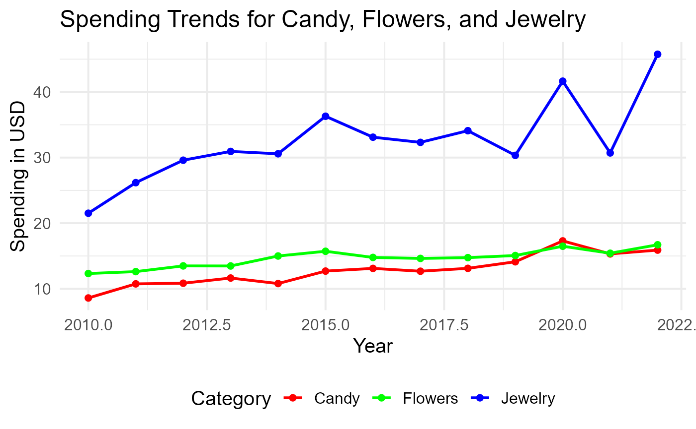

Visualizing Multiple Spending Trends with valentineTool
Chenghao Zeng
valentineTool.RmdIntroduction
The valentineTool package provides functions to help you analyze consumer spending trends for Valentine’s Day. This vignette demonstrates how to use the plot_trends_custom() function to visualize multiple spending categories on a single plot. By plotting multiple lines, you can better understand how spending patterns on different Valentine’s Day gifts evolved over the years.
Load Required Libraries
First, we need to load the valentineTool package. We will also use dplyr for data manipulation.
##
## Attaching package: 'dplyr'## The following objects are masked from 'package:stats':
##
## filter, lag## The following objects are masked from 'package:base':
##
## intersect, setdiff, setequal, unionStep 1: Load the Data
The valentineTool package provides a dataset called historical_spending. This dataset contains information about Valentine’s Day spending trends in different categories from 2010 to 2022.
## Year PercentCelebrating PerPerson Candy Flowers Jewelry GreetingCards
## 1 2010 60 103.00 8.60 12.33 21.52 5.91
## 2 2011 58 116.21 10.75 12.62 26.18 8.09
## 3 2012 59 126.03 10.85 13.49 29.60 6.93
## 4 2013 60 130.97 11.64 13.48 30.94 8.32
## 5 2014 54 133.91 10.80 15.00 30.58 7.97
## 6 2015 55 142.31 12.70 15.72 36.30 7.87
## EveningOut Clothing GiftCards
## 1 23.76 10.93 8.42
## 2 24.86 12.00 11.21
## 3 25.66 10.42 8.43
## 4 27.93 11.46 10.23
## 5 27.48 13.37 9.00
## 6 27.27 14.72 11.05Step 2: Plot Multiple Spending Categories
We want to plot the spending trends for Candy, Flowers, and Jewelry over time to understand how these categories compare to each other. The plot_trends_custom() function allows us to visualize these multiple categories in a single plot.
plot_trends_custom(historical_spending, c("Candy", "Flowers", "Jewelry"))
In this plot, each line represents the spending trend for a different category. By comparing these trends, we can see how spending on different gift categories has evolved over the years. For example, we might notice that spending on jewelry has increased significantly compared to candy or flowers.
Step 3: Customizing the Plot
To make the plot more informative, we can further customize it by adding a title, changing colors, and positioning the legend.
plot_trends_custom(historical_spending, c("Candy", "Flowers", "Jewelry")) +
labs(title = "Spending Trends for Candy, Flowers, and Jewelry",
x = "Year",
y = "Spending in USD") +
scale_color_manual(values = c("Candy" = "red", "Flowers" = "green", "Jewelry" = "blue")) +
theme_minimal(base_size = 15) +
theme(legend.position = "bottom")
In the customized plot, we:
Added a Title: This helps to communicate the key message of the plot.
Changed Colors: We assigned specific colors to each category for better distinction.
Adjusted Legend Position: Placing the legend at the bottom helps make the plot more organized.
Conclusion
The plot_trends_custom() function is a powerful tool for visualizing multiple consumer spending categories over time. By using it, we can easily compare trends and draw insights about changing consumer preferences during Valentine’s Day. Customizing the plot further helps in making the visualizations more appealing and easier to interpret.
Feel free to experiment with other categories in the dataset to uncover more insights about Valentine’s Day spending trends!